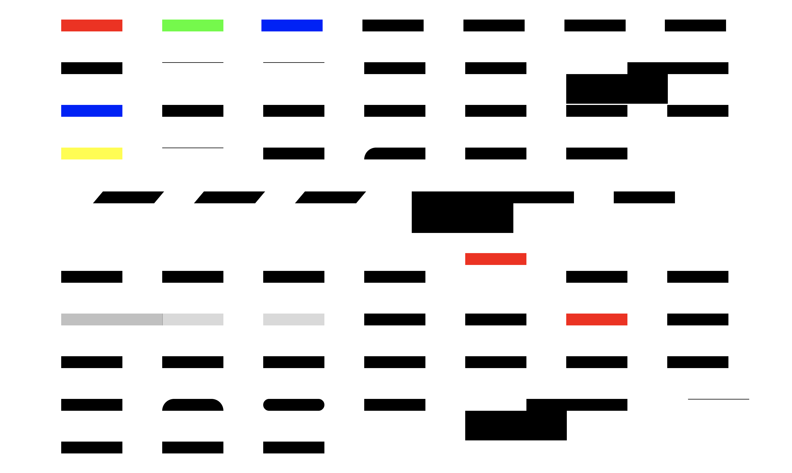
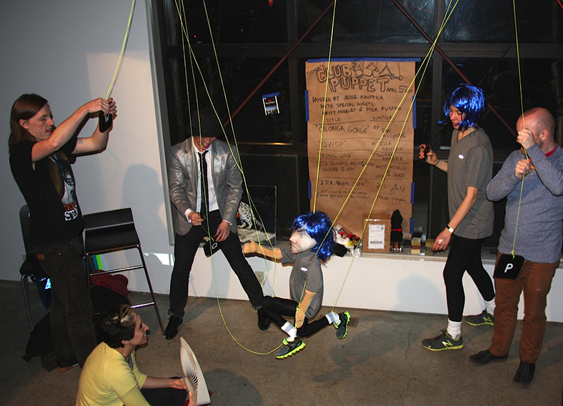

week 4September 14–20

— early result from charette
I am still excited that the CSS typeface is even a project. It’s just really fun to see all the possibilities that arise from messing around in a text editor, and exploring another way to make type is just fun fun fun.
The versions I had on Monday made me realize that I was a little too oriented on making variable and layerable fonts, like Typotheque’s History. The crit reminded me that the project was about distilling microinteractions, but I’m glad I was given the space to make the different fonts. It’s so easy to keep adding, but distilling isn’t that hard—once you arrive at a solution. Getting to that confident point requires a lot of trials. I really liked how this project was paced, and how it was all about experimenting then letting the form of the letters and concept guide the decision for choosing the right animation/interaction over a novel one.
How can the rectangular screen be transformed to feel edgeless? How can the connotations of “infinite scroll” be changed?
Some comments also had me consider the materiality or physics of the webpage again. In the charette I had a version that stretched the letterforms vertically. Ben suggested adding that axis into the randomized glyph width version I showed. I was considering the expandable horizontal space, but not quite the vertical, which is kind of odd considering the common structure of the vertical infinite scroll (and vertical scroll in general over horizontal scroll). I’ve been thinking about the unbounded webpage a bit.
Using the browser not only for display and search but also tool-making and physical object production
Jonathan also mentioned how I could use the browser to draft a poster, possibly for the poster class I’m taking. Later I realized that he was getting at using the browser and HTML/CSS as a tool for creating material objects. Amazing. Using code to make generative art is a pretty common thing, but I had not thought about using the browser for that, even though it’s basically the same means. It’s just a different language of HTML/CSS and Javascript. Getting away from the conventions of the browser can be difficult when you’ve been using it since childhood.
What can you do in the browser that you can’t do in print?
Another thing I need to consider is how the letterforms interact with the space and the background. The white page is the print and digital default, but there are so many opportunities for dimension, like moving images.
There’s too many possibilities in this seemingly endless space. It seems like the only limit is one’s knowledge. What are the limits and edges of the internet? I keep trying to understand it in terms of it’s basic modules. Microinteractions and pixels are start, but those can be broken down even further. What are the atoms and simple machines of the digital space?

— IRL QWOP by Isla Hansen
Physical manifestations of digitally based creations.
—“but still… stuff… dies?”

I showed my non-designer/artist roommate my CSS typeface and it took her quite a while to be able to read it. It was hilarious. But also great.
Of course it’s easy for me to read since I made it, and my peers and designers have been exposed to a greater range of typefaces, making it not too illegible. But for my roommate, it completely blew her mind. The typeface was intentionally unconventional with the horizontal stress and hairline verticals. No curves, no diagonals. And that rendered it largely illegible to her. Seeing her try to decipher letters reminded me of when I did a psychology experiment where I had to try to guess what letter these kindergartners were trying to write. Goes to show how distant designers can get from the average visual perspective. It also has me wondering how much of design is pretentious and really only understandable by designers. It’s kind of problematic in the type design world, too, it seems. You really do have to learn about type. It’s so niche though that most people outside of it don’t care about all the features and technicalities of it. They just want to right-looking thing. Designers are just stylists to a lot of people.
To the general population, does what we do really matter? Do those formal details really add that much more? Or are all these arguments just to bolster our careers and help us continue making a living?
The details cascade into bigger things. It does make an impact. Especially if the decisions we make are rooted in a consistent ideology.

systems 2x2 by Max Fowler
I’m still skeptical about design research methodologies and representations but this graph thing makes sense.

— image idea, set in History
The forms are based on Roman proportions. Captures atom ≠ pixel, translation from physical form to digital format.
Phrase is a rehash of The National’s album title The System Only Dreams in Darkness. The internet is a bunch of rectangles.

Python/Drawbot → erroneous bitmapped inkjet print → scanned image
“Moiré patterns appear in many different situations. In printing, the printed pattern of dots can negatively interfere with the image. In television and digital photography, a pattern on an object being photographed can interfere with the shape of the light sensors to generate unwanted artifacts. They are also sometimes created deliberately – in micrometers they are used to amplify the effects of very small movements.”
— Wikipedia
Moiré as evidence of noise and distortion that occurs from attempting to compress atoms into pixels or from layering patterns (adding dimension). Also the creation of motion from shifting perspective on static objects.
Static body, moving image vs. active body, static image.
“24x24 pixels worth of hearts and thumbs-ups are at the tips of our trigger fingers, and traded on a marketplace like commodities with decreasing value. Sending vectorized (infinitely scalable and replicable) abstractions of our feelings is now a tic — when we press the button we are acting on a neurological impulse to make known our identity, affiliations, and aspirations.”
— from “A drop of love in the cloud” by Fei Liu

— via David Byrne
Thinking of public space on the internet: what’s being built, how it’s being built, and what’s being abandoned.

— from my dorm last year
— from Emigre 51 (I think that’s the issue)


— Arduino receipt printer that outputs posts from the subreddit r/showerthoughts
An idea that has been brewing for a few months now: print my Instagram feed.
Using a receipt printer can relate to commerce on the internet and in real life, and the form of the receipt paper (a long scroll) can be a physical representation of the infinite scroll. Also relates to the idea of search history / viewing history as evidence of consumption. The low resolution of thermal receipt printers also corresponds to the pixel ≠ atom idea.
Using a commercial receipt printer instead of an Arduino one changes the function of the printer from documentation of business transaction to recorder of digital interaction. Consumption of monetarily-valued objects to consumption of mind space.